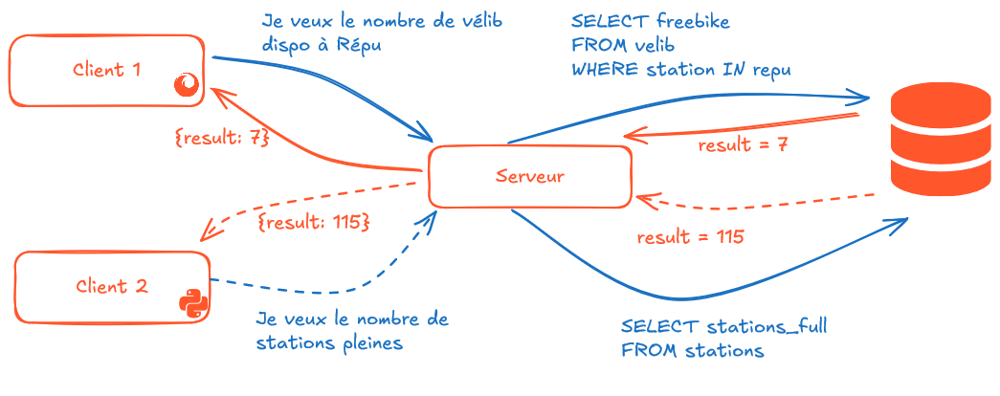

Masterclass API
Masterclass du SSPHub
Insee
09/04/2025
Introduction
Qu’est-ce qu’une API ?
Une API (application programming interface ou « interface de programmation d’application ») est une interface logicielle qui permet de « connecter » un logiciel ou un service à un autre logiciel ou service afin d’échanger des données et des fonctionnalités.
- Définition peu informative
Python,scikit-learn,Docker, etc. sont des APIs- En pratique, on signifie généralement une API REST
Les APIs REST
- API RESTful : API conforme au style d’architecture REST
- Communication via le protocole HTTP
- En pratique :
- On requête un endpoint (ex : l’API de la BAN)
- Avec des requêtes HTTP (
GET,POST, etc.) (ex : rues contenant “comédie”)
Analogie avec un restaurant
- 💬 Vous passez commande
- Requête avec paramètres depuis , , votre navigateur…
- ↔︎️ Le serveur transmet la commande en cuisine:
- Point d’entrée de l’API
- 🧑🍳 La cuisine prépare le plat
- Le serveur (informatique) fait les traitements ad hoc
- 🍕 Vous recevez votre plat
- Vous recevez une réponse au format
JSON
- Vous recevez une réponse au format
Pourquoi les API ?
- Praticité car permet de dissocier
- Le client: une interface web () ou un langage informatique (, , …)
- Le serveur: le moteur de calcul derrière
- Sobriété: permet l’accès à la donnée voulue sans parcourir tout un fichier
- Confidentialité: on peut mettre des droits d’accès à certaines données
- Unversalité: pas d’a priori sur le mode d’accès
Les API de données
Les API de données
- Plus de fichiers enregistrés manuellement
- Mise à jour assurée par le producteur
- Directement propagées au consommateur de données
- Permet l’automatisation de scripts sans stockage local
- Contrat formel avec un producteur de données
- Contrairement au webscraping!
- Permet de récupérer des données transformées complexes
- Exemple: inférences de modèles 🤖
Concepts principaux
Structuration d’une requête
Les requêtes prennent la forme d’URL:
\[ \underbrace{\text{https://api-adresse.data.gouv.fr}}_{\text{API root}}/\underbrace{\text{search}}_{\text{API endpoint}} \]
\[ /?\underbrace{\text{q=88+avenue+verdier}}_{\text{main parameter}}\&\underbrace{\text{postcode=92120}}_{\text{additional parameter}} \]
Auxquelles vont s’ajouter des headers (explication à venir)
Démonstration interactive dans les exercices!
Les requêtes HTTP
GET: récupérer des données depuis un serveur web (lecture d’une base de données…)POST: envoyer des données au serveur (formulaires de mise à jour de données, etc.)Pythoncommunique avec internet via le packagerequests(requests.getetrequests.post)
Les codes HTTP
Signification des codes HTTP
- 1xx : Informations
- 2xx : Succès
- 3xx : Redirections
- 4xx : Erreurs côté client
- 5xx : Erreurs côté serveur
Codes à retenir
Ceux à retenir sont : 200 (succès), 400 (requête mal structurée), 401 (authentification non réussie), 403 (accès interdit), 404 (ressource demandée n’existe pas), 503 (le serveur n’est pas en capacité de répondre)
Les swaggers
- Format standardisé de documentation
- Généralement entrypoint
/docs
- Généralement entrypoint
- Utilisation interactive et exemples
curl(ligne de commande)

Partie pratique
Les requêtes GET
- Requête la plus commune
- Transformation en objet (
JSON->dict) est naturelle
- Formattage dépend de chaque API (lire la doc ! 👮)
Les requêtes POST
Plus complexe mais
requestsest suffisamment flexiblePlus compliqué est de rentrer les objets
Pythondans le cadre de l’API
Gestion des secrets
Bonnes pratiques
La doctrine générale

Bonnes pratiques pour les secrets
- Boite de dialogue via
getpass(application interactive uniquement) - Variables d’environnement:
- Dans un fichier
.env(non committé!) - Dans les secrets de l’intégration continue
- Dans un fichier
Conclusion
Pratique pour récupérer des données ponctuelles:
- Afficher un nombre limité d’enregistrements dans une application
- Récupérer des données issues d’un processus de transformation complexe
Limitées en termes de volumétrie ou stabilité d’accès
Code très adhérant à une API et un langage client
Masterclass du SSPHub